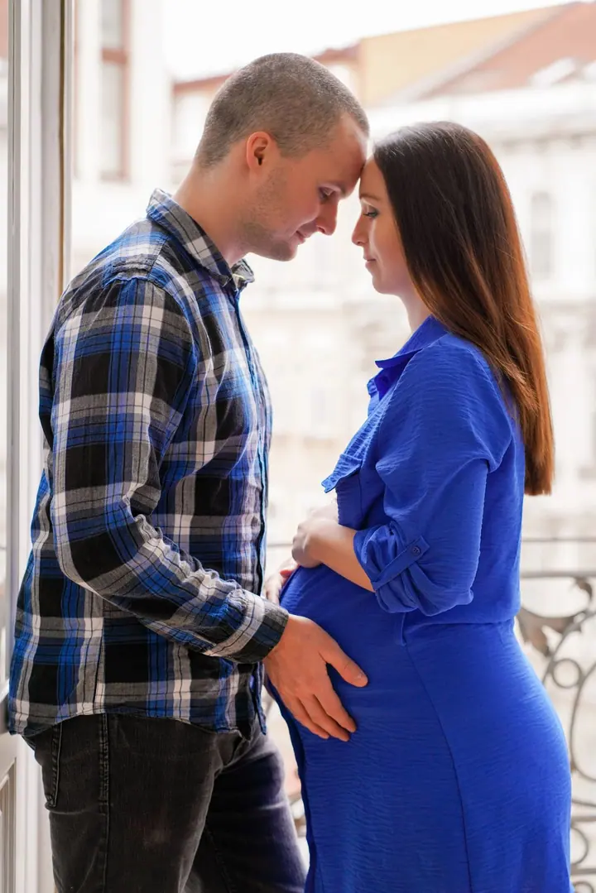
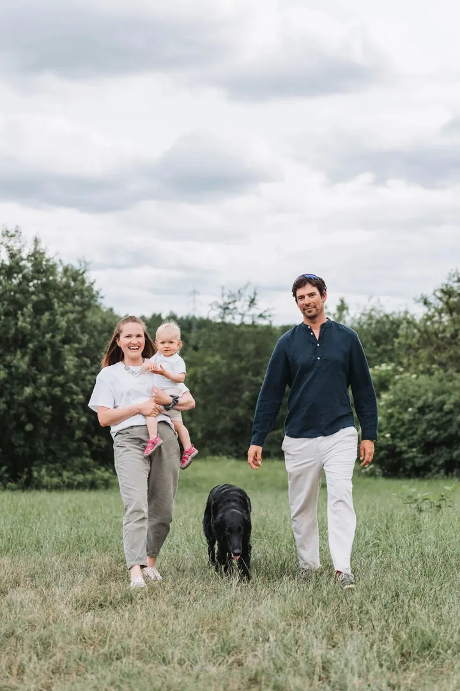
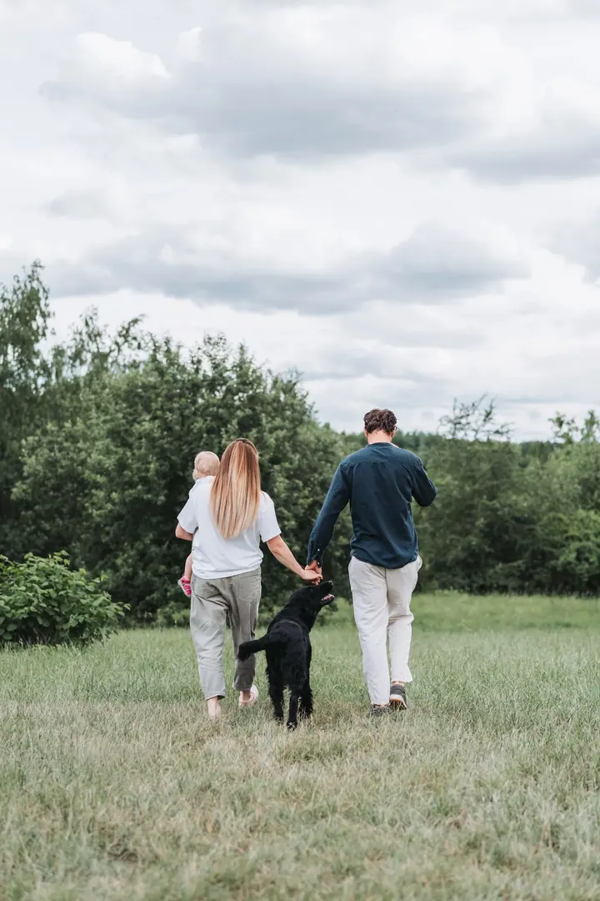

jedna
Svatební focení
Svatby jsou naše hlavní doména. Fotíme a natáčíme ve dvou, takže váš den máte zachycený z obou pohledů, od příprav až po večerní zábavu.

Svatební a rodinná fotografka · Praha, Brno, a okolí

Jmenuji se Markéta a spolu s Danem fotíme a natáčíme svatby, páry i rodiny. Nejsme jen fotografický tým, pracujeme jako pár, a díky tomu váš den zachytíme ze dvou úhlů najednou.
Více o mně
Co fotím
jedna
Svatby jsou naše hlavní doména. Fotíme a natáčíme ve dvou, takže váš den máte zachycený z obou pohledů, od příprav až po večerní zábavu.
dvě
Hodina až hodina a půl jen pro vás dva, klidně jako předsvatební focení. Je to příjemná příležitost se poznat ještě před svatbou.
tři
Společné chvíle s dětmi, prarodiči i psem. Fotíme venku, v pohodě a bez spěchu, aby to bavilo i ty nejmenší.
Vzpomínka na čekání na miminko, v ateliéru nebo v plenéru. Ráda vám poradím s pózováním, abyste se cítili přirozeně.
Dva fotografové, jeden pár a váš velký den

Za objektivem
Jsem Markéta a s Danem jsme v roce 2021 založili značku Fotíme spolu MD. Fotíme v Praze, v Brně a okolí, nejčastěji svatby, ale rádi přijedeme i na párové, rodinné nebo těhotenské focení.
Zakládáme si na osobním vztahu s novomanželi, energickém přístupu a pozitivní náladě. Na svatbě se vzájemně doplňujeme: Dan hlídá časový plán, logistiku a detaily, já se starám o atmosféru a o to, abyste se před foťákem cítili dobře.
Než začneme fotit, rádi se s vámi potkáme v kavárně, nebo si zavoláme online, a všechno v klidu probereme. Na zprávy odpovídáme v rámci hodin, ne dnů.
Markéta
Pošlete datum, místo a kolik hodin s námi počítáte. Odpovídáme v rámci hodin, ne dnů.
Sejdeme se v kavárně, nebo online z pohodlí domova, a probereme vaše představy i průběh dne.
Přijedeme ve dvou a fotíme z obou pohledů. Hlídáme časový plán i detaily, abyste si den mohli v klidu užít.
Fotky pečlivě vybereme a upravíme. Ze svatby jich podle délky focení dostanete zhruba 300 až 600.
Portfolio
Otázky
6 hodin focení za 16 000 Kč (asi 300 fotek), 10 hodin za 20 000 Kč (asi 500 fotek) a 14 hodin za 24 000 Kč (asi 600 fotek). Kratší focení je na domluvě.
Párové, rodinné i předsvatební focení trvá 1 až 1,5 hodiny a stojí 3 000 Kč. Dostanete 30 až 50 upravených fotografií.
Dopravu počítáme podle vzdálenosti místa focení od Prahy, nikdy ale víc než 1 000 Kč.
Hlavně datum akce, kolik hodin s námi počítáte a cokoli, co bychom měli vědět. Pak se domluvíme na schůzce osobně nebo online.